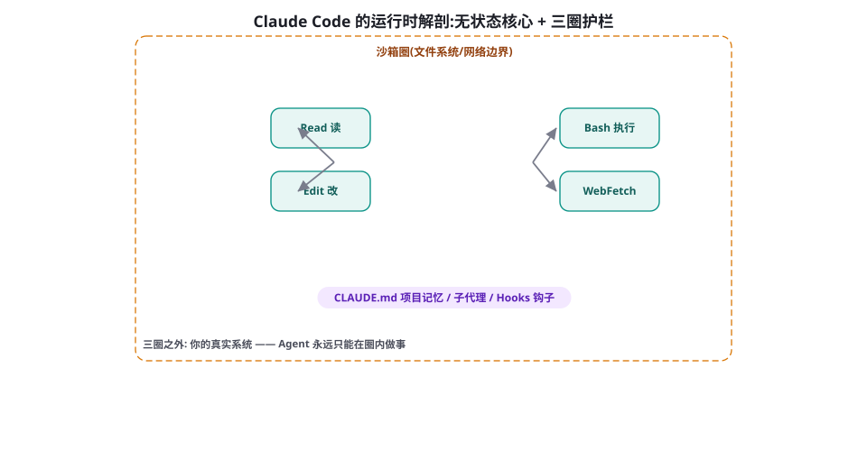

Claude Agent SDK 与 Claude Code 剖析
Claude Code 是 2025 年被讨论最多的编码 Agent，而 Claude Agent SDK 把它的运行时开放给了所有人。本章逆向解剖这套系统的设计：无状态核心、三圈安全、上下文工程的工程化、以及「少即是多」背后的取舍。
运行时解剖：无状态核心 + 三圈护栏
理解 Claude Code 的正确姿势，不是列它的功能清单，而是看它的结构：一个尽可能薄的 Agent 核心被三层护栏包裹。

核心圈：无状态的工具循环。与直觉相反，Claude Code 的核心没有精巧的状态机——它就是第 15 章的那个 while 循环：每轮把完整上下文交给模型，模型要么调用工具要么回答。所有的「智能感」来自三件事：底层模型的推理质量、精心设计的工具集（下一节详表）、以及对上下文的持续工程（/compact 压缩、todo 文件外置）。这个设计的哲学含义值得咀嚼：当模型足够强时，运行时的复杂度可以被大幅抽走——这与第 16 章「模型越强系统越薄」的观察是同一件事的产品级验证。
权限圈：每次工具调用的闸门。读写文件、执行 Bash 命令都要经过权限层：默认模式下写操作与命令执行要用户批准（交互式 UI 展示 diff 与命令内容）；用户可以按「本次会话」「本项目」「永远」三个粒度放行——这正是第 25 章授权策略的产品化。权限模型的精髓是默认保守 + 便捷放行的分层，而不是「全放行」或「全询问」的两个极端。
沙箱圈：物理边界。文件访问按工作目录裁剪、网络出口可配置关闭、执行环境有资源限制——第 60 章沙箱原则的工程实现。三层合起来的效果：模型的行为空间被结构性收窄，提示词只负责「引导」，不承担「防逃逸」。这是 Agent 安全的正确分工（第 59 章会对比错误分工的代价）。
既然核心只是「循环 + 好工具 + 好上下文」，那么模型升级直接转化为产品升级——没有状态机需要迁移、没有流程需要重新验证。这解释了这类产品的一个迭代特征：每次底层模型换代（能力、速度、上下文），产品的用户体验立刻跨档，而工程团队几乎零改动。对比重状态机的系统：模型升级后，为旧模型设计的路由、重试与提示词补丁反而成为拖累。这给架构选型提供了一个时间维度的判据：你期望「系统能力主要随模型成长」还是「系统行为必须严格确定」？前者押注无状态薄核心，后者押注显式状态机——Claude Code 与传统工作流引擎分别站在两端。
权限模型的工程细节：粒度与默认值
把权限圈放大看，三个设计细节值得抄作业。细节一：权限挂在「动作语义」而非「工具名」——同样是 Bash 工具，npm test 与 rm -rf 的风险天差地别；Claude Code 的权限提示展示的是具体命令与 diff 内容，让「审批的对象」是真实动作而非抽象工具。细节二：放行粒度三级——单次放行 / 会话内放行（同一前缀的命令）/ 项目级写进配置（入版本控制、团队共享）。这三级对应第 25 章授权策略的三个时间尺度，且项目级配置进入 git 意味着权限策略本身有 code review——安全策略的变更可见，这在企业落地时是合规刚需。细节三：拒绝的可解释回传——用户拒绝时可以带理由，理由进入 Agent 上下文，Agent 换方案而非再试（第 25 章「拒绝也是决定」的直接实现）。三处细节共同指向一个原则：权限系统的用户体验与它的安全强度同样重要——因为烦人的权限系统会被用户想办法绕过，而绕过后的系统比没有权限系统更危险。
工具集清单：每个工具都是一次设计课
Claude Code 的内置工具集不长，但每个都值得单独点评——它们是第 17 章工具设计原则的密集示范：
| 工具 | 设计亮点 | 对应的设计原则（第 17 章） |
|---|---|---|
| Read | 行号偏移 + 分页读；图片也能读（多模态） | 结果可消化：大文件分页教模型自己翻 |
| Edit | 精确字符串替换（非行号），必须先 Read 过才能 Edit | 前置条件写进协议：防「盲改」 |
| Bash | 持久会话（工作目录与环境保留）、可后台运行 | 状态显式化 + 长任务异步化 |
| Grep/Glob | 专用检索工具而非「用 Bash 跑 grep」 | 高内聚：高频操作值得专属工具 |
| Write | 写前必须读过旧内容（防覆盖） | 幂等与安全默认 |
| Task（子代理） | 派生独立上下文的子 Agent，只回摘要 | 第 24 章 Orchestrator-Workers |
| TodoWrite | 任务清单外置为可读写状态 | 第 18 章计划外置、第 76 章长时程 |
上下文工程的工程化：CLAUDE.md、压缩与笔记
Claude Code 是第 23 章上下文工程的最佳活教材，三个机制都值得搬到你的系统。CLAUDE.md（项目记忆）：仓库根目录的 Markdown 文件，自动进入每轮上下文——内容是项目约定、构建命令、代码风格。它的本质是把「程序记忆」（第 19 章）外置为用户可编辑的文件：团队对 Agent 的所有「调教」沉淀在版本控制里，而不是散落在聊天历史。给你的系统的启示：让用户可以声明性地写「永远遵守什么」，比让他们在对话里反复纠正高效得多。
上下文压缩（/compact）：上下文接近预算时，把旧对话折叠为结构化摘要、保留关键事实便签——第 23 章压缩模式的产品化。值得学的是它的透明性：压缩事件明确告知用户，且压缩后的行为可以通过「上次压缩丢了什么」的追问检验。todo.md 模式：多步任务的计划外置为清单文件，模型自己读写更新——第 18 章「计划即文件」的实践。它解决的两个问题非常具体：长任务中「目标漂移」（每轮重读清单）与「会话恢复」（重启后读清单即知进度）。把这三个机制加起来，你会发现 Claude Code 对上下文的理解非常克制：上下文不是越满越好，而是每轮都要「刚好够做出正确的下一步」。
import anyio
from claude_agent_sdk import (
ClaudeSDKClient, ClaudeAgentOptions, AssistantMessage, TextBlock)
OPTIONS = ClaudeAgentOptions(
# 允许的工具:换成数据领域就是 read_csv/run_sql/plot
allowed_tools=["Read", "Grep", "Bash"],
permission_mode="default", # 写操作走审批回调
setting_sources=["project"], # 读取项目级 CLAUDE.md
system_prompt="你是数据分析助手,只回答与 data/ 目录数据相关的问题。")
async def can_use_tool(name: str, params: dict) -> dict:
"""权限回调(第25章闸门): 高危命令转人工,其余放行"""
if name == "Bash" and any(
w in params.get("command", "")
for w in ("rm ", "drop ", "DELETE FROM")):
return {"behavior": "deny",
"message": "破坏性命令需人工确认,已拦截"}
return {"behavior": "allow"}
async def main():
async with ClaudeSDKClient(options=OPTIONS) as client:
await client.query("分析 data/sales.csv 的月度趋势并总结")
async for msg in client.receive_response():
if isinstance(msg, AssistantMessage):
for block in msg.content:
if isinstance(block, TextBlock):
print(block.text, end="")
anyio.run(main)三十行就是一个可用的领域 Agent——注意省掉了什么：没有工具 Schema（运行时内置）、没有循环（客户端托管）、没有权限表（回调接管）。省下的每一块都对应前几章你手写过或理解过的机制——这就是「厚运行时」路线的账单与收益。
深读：为什么「无状态」反而更依赖上下文工程
一个看似矛盾的观察值得单独拆解：核心越无状态，上下文工程的责任越重。原因在于「状态」从未消失，只是换了住所——从运行时的变量变成了上下文里的文本（对话历史、todo 清单、CLAUDE.md 约定）。于是传统系统里由状态机保证的性质（进度不丢、约束不遗忘、目标不漂移），在这里全部改由上下文的读写纪律保证：进度靠「每步更新 todo」、约束靠「CLAUDE.md 常驻」、目标靠「清单开头一行总目标」。这解释了为什么这类系统对「上下文质量」的敏感度异乎寻常——上下文就是它的全部状态，污染上下文等于损坏数据库。由此推出三条实操军规：任何写入上下文的操作（笔记、清单更新）都要原子化且格式稳定；上下文的「写权限」要收窄（谁在什么条件下可以更新清单要明确）；压缩（/compact）前必须先确认关键事实已落盘（第 23 章的铁律在无状态架构下从建议升级为生存条件）。理解了这一层，你就理解了这类产品的全部工程重心为什么都压在上下文上。
子代理与 Hooks：扩展点的两种哲学
两个扩展机制代表了不同的扩展哲学。子代理（Task 工具）：把一段工作「打包」给独立上下文的实例——用于隔离爆炸性输出（读 20 个文件找定义）与并行探索。它的取舍与第 24 章一致：换隔离与并行，付通信成本（子代理只回摘要，细节留在子上下文里）。Claude Code 的用法有一个聪明细节：子代理的调研类任务默认「只读工具集」——把权限设计挂在 Agent 类型上，而非靠提示词自觉。
Hooks（钩子）：在生命周期的固定点（工具调用前/后、会话开始等）插入用户自定义的 shell 命令——比如「每次 Edit 后自动跑 formatter」「Bash 执行前查一次危险命令黑名单」。Hooks 的哲学是「确定性代码拦截在概率性模型之外」：凡是能用规则保证的（格式、黑名单、审计），不依赖模型的自觉。这与第 27 章的「硬约束出事实、软约束出决策」完全同源。两种扩展机制合起来给出一个通用原则：概率性扩展（子代理）用于增加能力，确定性扩展（Hooks）用于收紧边界——方向别装反。
Agent SDK 的一切预设（文件工具、Bash 沙箱、CLAUDE.md、diff 审批）都围绕「在文件系统上工作」设计。如果你的场景是客服、营销文案或纯问答，把它当「通用 Agent 框架」引入会遭遇三连击：沙箱与文件权限是纯噪音、工具集与业务无关、成本结构为编码优化。这时第 29 章的 Agents SDK 或图框架才是对口工具。判断只需一问：你的 Agent 的「手」要不要碰文件系统或命令行？要——这章；不要——跳回前两章。
产品复盘：Claude Code 为什么赢下口碑
2025 年的编码 Agent 竞争里，Claude Code 的市场接受度超出多数预测。复盘它的差异化，三条设计决策反复被用户提及。第一，住在用户的地盘：不造 Web IDE、不要求迁移工作流，就是一个终端工具——用户的编辑器、快捷键、习惯全部保留。Agent 工具的「侵入度」被压到最低，采用的心理成本接近零。第二，可审计的过程：每一步动作（读什么、改什么、跑什么命令）都在终端可见、可拦截、可回滚（git 是天然的回滚层）。信任不是靠「演示智能」建立的，是靠「每一步都看得到」建立的——第 25 章信任校准的产品级执行。第三，把强大藏在克制后面：默认配置保守（权限询问）、复杂能力（子代理、Hooks、MCP）全部可选——新用户三分钟上手，高级用户可以越挖越深。这三条没有一个涉及「模型能力」，全部是产品与工程决策——这也许是本章最重要的启示：同代模型之下，Agent 产品的竞争一半在运行时设计，一半在体验设计。第 90 章的案例研究会把这组对比扩展到四个产品。
横向对照：与第 28/29 章两条路线的三点分野
把三个框架章节放在一起收束，给一张「哲学指纹」对照表，帮助你在团队讨论时快速定位立场：
| 维度 | LangGraph（图派） | Agents SDK（对象派） | Agent SDK（厚运行时） |
|---|---|---|---|
| 控制流住哪 | 图拓扑（你声明） | Handoff 原语（厂商约定） | 模型自主 + 工具协议 |
| 状态住哪 | 显式 State + Checkpointer | Session（对话级） | 上下文本身 + todo 文件 |
| 安全边界 | 自建节点/回调 | Guardrails 并行原语 | 权限圈 + 沙箱圈（结构级） |
| 最佳射程 | 多分支长流程、人审重的业务 | 分诊型服务、轻状态 | 文件/代码/命令强相关的领域 Agent |
| 主要风险 | 图复杂度失控 | 表达墙 + 厂商绑定 | 场景错配（纯对话硬套） |
这套运行时的开放版本经历了「Claude Code SDK → Claude Agent SDK」的更名。更名传递的信号值得解读：去掉产品名（Code）意味着官方希望它被视为通用 Agent 运行时而非编码工具的开发包——工具集可换、领域可换，唯一保留的是那套「文件系统上的工作方式」。读开源项目的更名历史常常比读 Roadmap 更有信息量：名字是团队对「这个东西到底是什么」的最新回答。
Claude Agent SDK：把运行时开放出来
2025 年，Claude Code 的运行时被封装为 Claude Agent SDK（曾名 Claude Code SDK）开放：开发者可以在自己的应用里使用同一套工具循环、权限模型与上下文工程——「你写 Claude Code 的定制版」。这带来三类典型玩法：领域编码助手（换掉工具集与 CLAUDE.md，变成数据分析 Agent、运维 Agent）；嵌入式自动化（CI 里的代码审查机器人、issue 自动分诊）；协议服务化（通过 MCP 把 Claude Code 暴露给其他系统调用）。SDK 的权限回调（canUseTool）把第 25 章的审批闸门开放为你的代码——企业可以接自己的审批队列。
选型视角（承接第 29 章的对照系）：Agent SDK 属于「厚运行时托管」路线——工具集、权限、上下文工程全部预置，你配置而非实现；适合的场景是「领域任务与文件/代码/命令强相关」时（运行时的工具集几乎不用改）；不适合的是「与文件系统无关的纯对话业务」——为客服问答引入文件沙箱属于用错工具。三条路线（图派/对象派/厚运行时）至此集齐，第 26 章的决策树现在三个分支都有了具体所指。
三个高频疑问
Q：CLAUDE.md 该写什么、不该写什么？写「项目级事实」：构建/测试命令、目录结构约定、代码风格红线、已知的坑（「模块 X 必须先初始化」）。不写三类东西：频繁变化的内容（放进文档系统或让 Agent 现查）、与具体任务相关的指令（放进任务描述）、以及长篇大论（CLAUDE.md 每轮占预算，第 23 章——保持在几十行内，把细节拆到子目录的说明文件，让 Agent 按需读取）。一个健康的检验：新人工程师读你的 CLAUDE.md 能否五分钟上手？能，说明它写对了。
Q：子代理什么时候该用？两个信号：子任务的中间产物「量大且看完即弃」（全库搜索、批量文档审读）；子任务可能「跑偏且污染主上下文」（试错性调研）。反信号：子任务需要主上下文里的细节判断（拆出去反而丢信息）、子任务很快（通信成本不划算）。与第 24 章的判据完全一致——工具换了，道理没换。
Q：和直接用 API 写编码 Agent 差在哪？SDK 给的是「已调优的整套东西」：工具实现（Edit 的 diff 逻辑、Bash 的持久会话管理、权限交互）、上下文工程（压缩时机、笔记策略）、以及与模型行为的配套调优（系统提示词与工具协议是共同进化的）。自建这三样的总工作量常被低估一个数量级——第 90 章会看到自建路线的完整清单。合理姿势是：拿 SDK 快速起步，确有差异化需求时再替换局部（换工具集、接自家审批系统）。
在结束本章前，做一次「机制迁移练习」：从本章挑一个机制搬到你自己领域——最值得首搬的是 CLAUDE.md 模式（几乎所有领域 Agent 都有「项目级约定」要沉淀，实现只是「读一个约定文件进上下文」）；其次是 todo.md 模式（凡多步任务皆适用）；第三是 「先读后改」的编辑协议（任何有写入场景的 Agent 都该有）。三个机制都是百行以内的工程量，却直接继承了一个千万级用户产品的实战验证——这就是「剖析优秀产品」的回报方式。
演进注记：从 CLI 工具到开放运行时
这条产品线的演化轨迹本身就是一堂战略课。第一阶段（2024-2025 初）：Claude Code 以终端工具形态发布——当时多数同行在做 IDE 插件与 Web 平台，终端是「落后」的形态选择；但它恰恰命中了专业开发者的真实环境（服务器上、SSH 里、脚本中），并借 git 天然获得回滚层。第二阶段（2025 中）：开放 Claude Code SDK——产品验证过的运行时成为开发者资产，工具的市场从「用它干活的人」扩展到「用它造产品的人」。第三阶段（2025-2026）：SDK 更名 Agent SDK 并加入 MCP 深度集成——运行时与开放协议合流，工具生态不再受限于官方清单。三步走的每一步都在扩大同一资产（运行时）的杠杆：先验证、再开放、再协议化。对做 Agent 产品的团队，这个序列比任何单点功能都值得研究：先做一个自己在用的工具，再考虑它能不能成为别人的平台。
学习本章的最佳方式是边用边验证：打开 Claude Code（或任何同构工具）做一个小项目，同时观察本章讲过的每个机制「在现场的样子」——权限弹窗出现的时机与粒度、上下文接近预算时 /compact 的触发、子代理返回摘要的形态、todo 清单如何被维护。把观察记录与本书的机制描述对照，不一致的地方要么是版本差异（查官方更新日志），要么是你发现了文档没写的行为——两者都值得记录。这种「带着机制框架用产品」的方法，比单纯使用或单纯阅读都快得多，它同时训练你的产品品味与机制直觉。
关于「剖析」方法本身的元评论：本章没有源码级的逆向，全部结论来自公开文档、官方工程博客与可观察行为——这是研究闭源 Agent 系统的标准方法学，值得内化。观察什么：行为边界（它能做什么/拒绝做什么暴露权限模型）、交互节奏（何时询问/何时静默暴露上下文策略）、失败模式（出错时的表现暴露错误处理设计）。如何验证推断：设计小实验区分假设——比如「怀疑它有 todo 机制」，就给它一个十步任务并中途打断，观察恢复行为。这套方法在第 90 章（拆解 Devin/Manus/Cursor）会再次全面使用——对手头的任何竞品或标杆产品，你都可以在一天内产出一份机制推断报告，这是本书想交付给你的通用技能之一。
Hooks 实操：三个即插即用的钩子配方
Hooks 的价值在配方，给三个拿来即用的。配方一：格式守护——挂「Edit 之后」，自动对被改文件跑 formatter/linter，失败则把报错回灌给 Agent（它会在下一轮自己修）。这个钩子把「代码风格」从模型的责任里完全剥离：模型只管逻辑正确，格式由确定性工具兜底——搭配使用模型可以放心用更快的档位。配方二：危险命令审计——挂「Bash 之前」，正则匹配高危模式（递归删除、外发数据、改系统配置），命中则拒绝并把理由回传。它是权限圈的规则化延伸，专治「用户已经疲劳开始盲批」的现实。配方三：会话纪要——挂「会话结束」，把本次会话的 todo 状态与关键决定追加进项目日志文件，下次会话自动可见。三个配方的共同点：都用十行以内的 shell 脚本，把「希望模型每次都记得做的事」变成「系统保证发生的事」。检查你的 Agent 设计里还有哪些「靠提示词祈祷的纪律」——它们都是潜在的 Hook。
最后把本章放进第 3 部分的进度里收束。至此三种框架哲学全部亮相：图派（第 28 章）给了你显式控制流的工业标准，对象派（第 29 章）给了你托管原语的轻盈，厚运行时（本章）给了你「Agent 即产品」的完整范本。接下来的四章（第 31-34 章）转向多智能体框架与数据框架——它们不是前三种的替代品，而是在特定象限（群聊协作、SOP 流水线、数据密集）的专门化工具。第 35 章的低代码平台与第 36-37 章的协议层则为整个地图补上「不写代码的人」与「互操作的未来」。框架篇的学习曲线在此过半，请确认你的第 27 章代码还活着——后面每章的对照实验都需要它。
祝你的剖析与迁移顺利。下一章，我们把镜头转向多智能体框架的鼻祖级项目——AutoGen，看看「让 Agent 们围坐开会」这个曾经看似疯狂的想法，如何一步步演化为一个成熟而庞大的生态。
本章小结
- 三圈结构：无状态薄核心 + 权限圈 + 沙箱圈；提示词只管引导，安全靠结构。
- 工具集每个都是设计课：Read 分页、Edit 先读后改、Task 子代理只读默认、TodoWrite 外置计划。
- 上下文工程三件套：CLAUDE.md（程序记忆外置）、/compact（透明压缩）、todo.md（计划即文件）。
- 三条路线哲学指纹对照：控制流、状态、安全边界的住法各不相同——按场景匹配选择。
- 扩展哲学：子代理（概率性）增加能力，Hooks（确定性）收紧边界——方向不能装反。
- 无状态架构下上下文就是全部状态：写入原子化、写权限收窄、压缩前先落盘是生存条件。
- Agent SDK 开放运行时：适合文件/代码强相关的领域 Agent；纯对话业务别用它。
自测题
- 「无状态核心」与 LangGraph 的「显式状态机」是两种极端。什么信号说明你的系统该往哪端移动？
- 为什么「Edit 前必须 Read」应该做进工具协议而不是写进系统提示词？用第 17 章的七原则回答。
- 为你的领域设计一个「Claude Code 变体」：保留哪些工具？删掉哪些？CLAUDE.md 里写什么？
- Hooks 与提示词规则都「让模型守规矩」，两者的失效模式有何不同？各举一个该用对方的场景。
参考文献与延伸阅读
- Anthropic (2025). Claude Agent SDK 文档. docs.anthropic.com; github.com/anthropics/claude-agent-sdk-python
- Anthropic (2025). Claude Code 最佳实践. anthropic.com/engineering
- Anthropic (2025). Building agents with the Claude Agent SDK. anthropic.com/engineering
- Anthropic (2025). Managing context on the Claude Developer Platform（上下文编辑与压缩）. anthropic.com/engineering